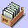
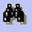
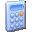
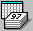

PULSANTE
DESCRIZIONE

Questo pulsante ha
lo scopo di visualizzare il dettaglio del procedimento
corrente

Questo pulsante ha lo scopo di visualizzare la posizione materiale associata al fascicolo corrente
Questo pulsante ha lo scopo di visualizzare l' Elenco dei Provvedimenti emessi dal PM relativamente al fascicolo corrente
Questo pulsante ha lo scopo di visualizzare l' Elenco dei Provvedimenti emessi dalla Sorveglianza e dal Giudice dell'Esecuzione relativamente al fascicolo corrente

Questo pulsante ha lo scopo di consentire all'utente di effettuare una Ricerca di un determinato Procedimento
Questo pulsante ha lo scopo di consentire all'utente di effettuare una Ricerca di un Procedimento associato ad uno specifico Soggetto

Questo pulsante ha lo scopo di visualizzare il Riepilogo Generale dei totali delle quantità componenti la Pena per il procedimento corrente

Questo pulsante ha lo scopo di consentire all'utente di effettuare un Calcolo Rapido della Pena